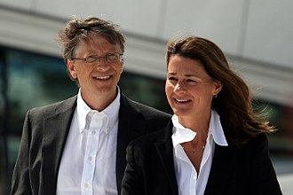

| Home | Early life | Personal life | Microsoft | Gallery |
|---|
| Gates married Melinda French on a golf course on the Hawaiian island of Lanai on January 1, 1994.[citation needed] They have three children: Jennifer, Rory and Phoebe.[citation needed] The family's residence is an earth-sheltered mansion in the side of a hill overlooking Lake Washington in Medina, Washington. In 2009, property taxes on the mansion were reported to be US$1.063 million, on a total assessed value of US$147.5 million. The 66,000-square-foot (6,100 m2) estate has a 60-foot (18 m) swimming pool with an underwater music system, as well as a 2,500-square-foot (230 m2) gym and a 1,000-square-foot (93 m2) dining room. In an interview with Rolling Stone, Gates stated in regard to his faith: "The moral systems of religion, I think, are super important. We've raised our kids in a religious way; they've gone to the Catholic church that Melinda goes to and I participate in. I've been very lucky, and therefore I owe it to try and reduce the inequity in the world. And that's kind of a religious belief. I mean, it's at least a moral belief." |
> |
Gates also said: "I agree with people like Richard Dawkins that mankind felt the need for creation myths. Before we really began to understand disease and the weather and things like that, we sought false explanations for them. Now science has filled in some of the realm – not all – that religion used to fill. But the mystery and the beauty of the world is overwhelmingly amazing, and there's no scientific explanation of how it came about. To say that it was generated by random numbers, that does seem, you know, sort of an uncharitable view [laughs]. I think it makes sense to believe in God, but exactly what decision in your life you make differently because of it, I don't know."[170]
Gates purchased the Codex Leicester, a collection of scientific writings by Leonardo da Vinci, for US$30.8 million at an auction in 1994.[171] Gates is an avid reader, and the ceiling of his large home library is engraved with a quotation from The Great Gatsby.[172] He also enjoys playing bridge, tennis, and golf.[173][174] Gates's days are planned for him on a minute-by-minute basis, similar to the U.S. President's schedule.[175] Despite his wealth and extensive business travel, Gates flew coach in commercial aircraft until 1997, when he bought a private jet.